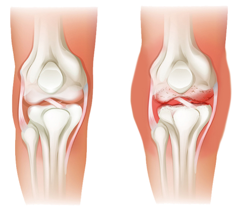

Молодость принца Филиппа
Молодость принца Филиппа В доме на колесах по миру!
В доме на колесах по миру! Джонни Депп. До и после развода
Джонни Депп. До и после разводаЗдравствуйте. Подскажите, можно ли пить капли, если у меня проблемы с жкт?
ОтветитьДоктор Гонсалес: Здоровые суставы – залог долголетия
В то время как многие его ровесники еле передвигаются, 76 летний ревматолог Доктор Гонсалес каждый день занимается спортом, катается на велосипеде и посещает спортзал. Он до сих пор ведет приемы, потому что у него хватает на это сил, и он хочет помочь как можно большему количеству людей обрести вторую молодость.
Доктор Гонсалес уверен, что залог молодости и долголетия – в здоровых суставах и регулярных занятиях спортом. Наш корреспондент встретился с этим легендарным доктором, чтобы узнать, как он умудряется держать себя в такой прекрасной форме.
- Доктор Гонсалес, вы говорите, что суставы – это залог здоровья. Но неужели они правда могут влиять на состояние организма?
- Во-первых, я вам хочу сказать, что движение – это жизнь. Это было известно еще древним мудрецам. Регулярные занятия спортом и физическая активность позволяют сохранить здоровье сердечно-сосудистой системы. Но многие люди за 60, я бы даже сказал за 50 прекращают занятия спортом, даже если раньше уделяли этому много внимания. Почему? Потому что боль в суставах не дает им нормально двигаться. Они начинают принимать обезболивающие, но это не помогает. Суставы теряют подвижность, эластичность и очень скоро люди оказываются если не в инвалидном кресле, то по крайней мере неспособными вести активный образ жизни.

С возрастом хрящевая ткань деформируется и разрушается под влиянием стресса, активного спорта,
нездорового образа жизни
- Почему возникают проблемы с суставами?
- На самом деле, очень много факторов. Сильное влияние оказывает образ жизни. Сидячая работа, неправильное питание, вредные привычки очень усугубляют ситуацию. Лишний вес дает большую нагрузку на суставы. Хотя бывает человек не употребляет алкоголь и в зал ходит, а суставы все равно болят. Это может быть генетически обусловлено или развиваться под влиянием чрезмерных физических нагрузок. Суставы просто-напросто изнашиваются. Бег трусцой, силовые упражнения, прыжки, велосипед – все это очень полезно для организма в целом, но является огромным стрессом для суставов. Наша задача поддерживать их здоровье как можно дольше.

- В общем, ходишь в зал – плохо, не ходишь – тоже плохо. Что же делать тогда?
- Ситуация очень и очень серьёзная. Именно поэтому я до сих пор не на пенсии и стремлюсь помочь как можно большему количеству людей. По последним данным, патология суставов у людей старше 40 лет обнаруживается в 50% случаев, а после 70 лет - у 90% населения. Врачи стараются помочь, но не могут предложить ничего кроме банальных анальгетиков, которые помогают справиться с болью, но не лечат, а только усугубляют ситуацию, так как болезнь продолжает прогрессировать пока анальгетики маскируют боль.
- Как понять, что у тебя проблемы с суставами?
Если вам за 40 и вы –
не я, то у вас наверняка болят суставы (смеется). А если серьезно, то признаки следующие
Сильная боль: в состоянии движения или покоя
Отек в области сустава: стойкий или временный. Покраснение и повышение температуры в пораженной области
Скованность движений по утрам
Скованность суставов после сна или длительного отдыха
Треск, скрип и щелчки, сопровождающиеся глухим звуком
Боль при движении и усилии
Даже если пока что эти симптомы вас не настигли, нужно вовремя начать заниматься здоровьем своих суставов.
Сильная боль: в состоянии движения или покоя
Отек в области сустава: стойкий или временный. Покраснение и повышение температуры в пораженной области
Скованность движений по утрам
Скованность суставов после сна или длительного отдыха
Треск, скрип и щелчки, сопровождающиеся глухим звуком
Боль при движении и усилии
Даже если пока что эти симптомы вас не настигли, нужно вовремя начать заниматься здоровьем своих суставов.
- Как вы поддерживаете свои суставы и что рекомендуете своим пациентам?
- Как я уже говорил, до недавнего времени единственным способом облегчить состояние пациентов было использование анальгетиков (как местных в виде кремов и мазей, так и в виде таблеток с множеством побочек). Однако сейчас мы можем говорить о настоящей революции в этой сфере. Она сазана в появлением крема для суставов под названием FortuFlex. В отличие от всего, что было до него, он не просто оказывает обезболивающее действие, но и восстанавливает саму структуру сустава в буквальном смысле делая его более здоровым благодаря своим уникальным природным ингредиентам.

Хондроитин и глюкозамин, входящие в состав FortuFlex, обладают максимальной активностью и оказывают немедленное действие на внутренние ткани сустава, предотвращая повреждающие процессы в хрящевой и костной ткани. Благодаря своей абсолютно уникальной природной формуле крем.
Быстро снимает боль, отек и воспаление
Улучшает обменные процессы в суставах
Запускает процессы восстановления костной и хрящевой ткани
Этот продукт не содержит искусственных ингредиентов, только натуральные экстракты растений для стимуляции регенерации хрящей. Я рекомендую этот препарат всем своим пациентам и их отзывы о нем – моя лучшая мотивация продолжать работать и помогать людям. Кроме отзывов моих пациентов есть и более официальные данные. Например, Всемирная организация здравоохранения в 2019 году провела серию клинических испытаний крема Fortuflex. В испытании приняли участие 3500 человек с различными заболеваниями суставов и разной степени тяжести. Согласно условиям, все участники получали крем Fortuflex.
 Ощутили результат уже после первого
применения
Ощутили результат уже после первого
применения Отметили мгновенное облегчение боли
Отметили мгновенное облегчение боли
 Отметили общее улучшение состояния
суставов
Отметили общее улучшение состояния
суставов Избавились от артрита и артроз
Избавились от артрита и артроз
- Звучит просто фантастически! Вы упоминаете особый состав крема. Какие компоненты делают его таким эффективным? Кажется, что это должна быть какая-то мощная химия.
- В том то и дело, что состав абсолютно натуральный. Глюкозамин стимулирует образование гиалуроновой кислоты, которая удерживает воду в соединительной ткани, обеспечивая эластичность, а также стимулирует синтез коллагена и блокирует образование свободных радикалов, замедляя старение сустава. Хондроитин блокирует ферменты, разрушающие соединительную ткань, и обладает противовоспалительным действием. Кумкват стимулирует иммунную систему, восполняет дефицит витаминов и минералов, выводит из организма токсины, ускоряет заживление и повышает устойчивость к вирусам и инфекциям.
- Сколько стоит FortuFlex и где его купить?
-Ко мне приходят пациенты с разным достатком. К счастью, FortuFlex доступен всем и стоит он совсем не дорого. Для заказа на официальном сайте можно воспользоваться акцией, которая действует - ДО
FortuFlex сейчас можно приобрести со скидкой 50%
Узнать больше о натуральном средстве Fortuflex
Чтобы заказать FortuFlex, вам необходимо:
Заполните форму на официальном сайте
- Менеджер свяжется с вами для подтверждения адреса доставки.
- Через 1-3 дня (срок доставки) вы получите FortuFlex курьером.
- Оплата при получении!
Просто наносите мазь на проблемные участки 2 раза в день, втирайте в кожу, и ваши суставы вас точно отблагодарят.
- Доктор Гонсалес, спасибо, сто делитесь такой важной информацией и помогаете людям.
Анастасия Сорокина
Admin
Здравствуйте, Анастасия. Капли Fortunella , нормализуют не только работу жкт, но и всех систем организма. Принимайте капли по инструкции, и не превышайте дозировку. Удачи!
Ответить
Ирина Шишкова
Я уже давно не верю в обещания “минус 20 кг за месяц”, ну не бывает такого. Пила эти капли, за месяц похудела всего на 4 килограмма, но с таким же успехом можно и на диете посидеть.
Ответить
Ирина Шишкова
Если честно, то только первые пару дней, потом вышла на работу, и там уже как получится.
Ответить
Admin
Ирина, очень важно придерживаться инструкции, попробуйте ещё раз, не пропускайте прием и не превышайте дозировку, эффект капель накопительный, поэтому не бросайте, если в первое время вы не увидите резкого снижения веса.
Ответить
Ирина Шишкова
Я последовала вашему совету, и действительно, первое время вес уходил медленнее чем я рассчитывала, но спустя 2 недели на весах - 11,5 килограмм. Спасибо вам большое!
Ответить
Екатерина Бунина
Я похудела на 34 килограмма с каплями Fortunella!!! Выгляжу сногсшибательно. А самое главное, что вес не возвращается. Я советую всем это средство.
Ответить
Ольга Остроухова
Я худею с каплями Fortunella, с 78 килограмм. И за первую неделю ушло 4,5 килограмма, в основном вода и шлаки. За вторую неделю ушло еще 7,5 килограмм, но это уже был исключительно жир! (у меня весы с анализатором состава тела, так что я контролировала буквально все изменения). Сейчас мой вес составляет 55 килограмм, и это всего за полтора месяца!
Ответить

Александра Александрова
Я столько слышала положительных отзывов об этом средстве, что решила заказать, нашла сайт в интернете и заказала курс. В итоге, доставляли две недели, никакой инструкции не было, сайт где я заказывала перестал работать. На вкус гадость какая то, эффекта никакого, пила неделю и начались проблемы с жкт, конечно бросила. Не советую никому.
Ответить
Admin
Александра, здравствуйте. Вы купили подделку. Капли Fortunella в нашей стране продаются лишь одним производителем, его сайт указан выше. В каждой упаковке есть инструкция, и конечно же никаких проблем со здоровьем капли не вызывают, а наоборот нормализуют работу всего организма. Закажите на официальном сайте, и вы увидите каких результатов можно добиться.
Ответить
Александра Александрова
Я так и поступила, заказала капли на сайте выше. Доставили через 2 дня после заказа прямо домой, инструкция прилагается, выглядят совершенно по другому, чем когда я заказывала в первый раз, упаковка очень качественная. По вкусу приятные, пью по инструкции уже 2 дня, никаких проблем не заметила. Девочки остерегайтесь подделок!!!
Ответить
Марина Антропова
Давно искала средство для похудения, а то я такая лентяйка, сама себя никогда в руки не возьму. Заказала, понравилась доступная цена и натуральный безвредный состав. Химией себя тоже травить не хочется. Пью, аппетит намного меньше стал, чувствую себя отлично - никаких побочных эффектов нет. На весах уже минус 6,5 килограмм, за 8 дней. Я очень довольна!
Ответить
Юлия Ковалева
Пью капли уже третью неделю - всего минус 3 килограмма. Я разочарована, надеялась на большее
Ответить


Admin
Это слишком маленькая суточная доза, поэтому и результат не тот. Пейте по чайной ложке 2 раза в день или по 15 капель 6 раз в день, и лучше всего за 20 минут до еды.
Ответить
Юлия Ковалева
Вы были правы, как только я изменила дозировку, вес пошёл вниз. За неделю минус 5,5 килограмм!!!
Ответить
Инга Смолова
Ответить
После родов никак не могла похудеть, что я только не пробовала, и диеты и таблетки и голодала даже. Помогли только капли Fortunella, за месяц я похудела на 16, 5 килограмм и стала такой же как до родов. Девочки, не мучайте себя диетами, закажите капли и вы быстро похудеете, без вреда для здоровья. Посмотрите на меня)
Я в профессиональном спорте с 13 лет. Не жалел себя ради побед. Колени болели так, что аж зубы сводило. Мне даже таблетки уже не помогали. FortuFlex просто творит чудеса. Я восстановился и живу без боли. Правда из спорта теперь только пробежки по утрам. Здоровье дороже. Но мазь очень рекомендую.
Елена, так держать и у вас всё получится!
ОтветитьДобрый день. Подскажите пожалуйста, при приеме капель надо соблюдать диеты или заниматься спортом?
ОтветитьЗдравствуйте, Полина. Соблюдать диету или увеличивать физическую активность при приеме капель не обязательно, но если вы уменьшите потребления сахара и жирного, то желаемого результата вы сможете добиться быстрее.
ОтветитьБольшое спасибо. А то я боюсь что не смогу отказаться от любимой еды, а похудеть очень хочется. Заказала курс, попробую.
ОтветитьЯ в восторге от этого средства. Я за 6 недель похудела на 23,5 килограмма!!! Не изнуряя себя ни диетами, ни спортом, только в самом начале немного уменьшила порцию, а уже буквально через три дня заметила, что аппетит снизился и мне не хочется объедаться на ночь. Оцените мои результаты)
Анна, вы выглядите шикарно!!!
Ответить